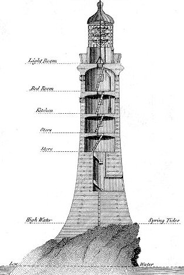

Tuesday, August the 24th, 2004
back to: title, date or indexes
Our correspondent Fatima Gilliblat has been hospitalised following an accident involving a heron, some boot polish and a mudslide, but has nevertheless managed to send in her latest column. Get well soon, Fatima!
Hello readers. This week I am going to tell you How To Eat Mashed Potatoes Next To A Lighthouse. First, parboil your potatoes, then parboil them a second time, then mash them. Add a little butter and seasoning. Spoon your mash onto a pre-heated plate, and cover thoroughly in tin foil. This will ensure your mashed potato stays piping hot while you are travelling to your nearest lighthouse. Before leaving the house, pop a fork and a napkin into your pocket. Catch a bus to the coast. There should be a rowing boat tied up to a painter on the shore. Carefully place the plate of mashed potato into the boat, then clamber in, and row with all your might to that lighthouse over there. In case you are wondering, this is what a lighthouse looks like:

Tie up the boat to a post embedded in the rocks on which the lighthouse stands. Some of the rocks may be razor sharp, so be careful! Disembark from the rowing boat, not forgetting to carry your plate of mashed potatoes. Find a reasonably comfortable spot in which to crouch, and remove the tin foil. Scrunch it up into a ball and put it in the same pocket from which you should now remove the fork and napkin. Tuck the napkin under your chin, making it secure so that it does not blow away in the howling gale. Using the fork, devour every last mouthful of your mashed potatoes. If the lighthouse keeper appears, share your food, for no lighthouse keeper likes to be deprived of mashed potatoes. You would, of course, know that if you had paid attention and learned your proverbs instead of being a feckless guttersnipe. Rinse your plate and fork in the broiling sea, then row back to the mainland, having given a hearty wave to the lighthouse keeper. Don't forget to tie the rowing boat to the painter where you found it. Place your soiled napkin and balled-up tin foil in the municipal waste bin at the bus depot. If you have missed the last bus, you will either have to walk home or spend a sleepless night cowering under threadbare blankets in a haunted manse riddled with poltergeists.
Hooting Yard on the Air, October the 4th, 2006 : “"How To..." With Fatima Gilliblat” (starts around 00:00)